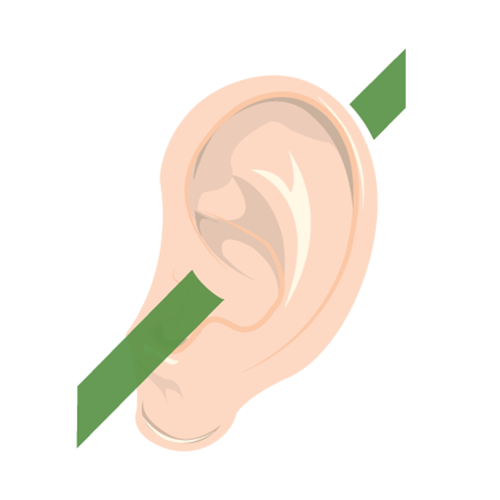

A human rights breach is when the human rights of an individual or group have been ignored or denied. A breach may be accidental or intentional. It could be a major or minor incident. Sometimes, a breach is not clear cut. Regardless of the situation, maintaining human rights is essential.
Human rights breaches
Select each of the headings below for examples of different types of human rights breaches.

A person with hearing and sight disabilities is unable to access information about courses at their local TAFE. This will limit their access to education, limiting their employment opportunities and potentially leaving them in poverty.
In this example, alternative access to information could be provided in the form of braille, AUSLAN interpreters or communication boards.
Preventing resident access to different technologies in an aged care could be a third generation rights breach. For example, not allowing residents to use computers or mobiles because of their age would be ageism and intergenerational inequality. Providing access to these resources could improve residents’ quality of life by improving communication with family and friends outside the facility and mentally engaging them with new information and tasks.